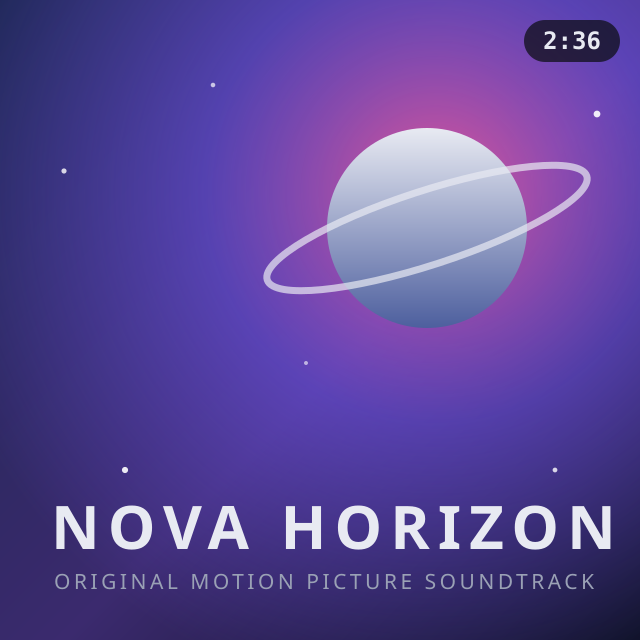

The cover art your radio
never showed you.
Real-time album covers, composer credits and a live remaining-time countdown for the 24seven.fm station family — in Winamp, in foobar2000, or in its own window.

Poster mode — blurred backdrop, sharp cover, track info with live countdown.
Features
A tiny native app — no Electron, no runtime, no telemetry. Just Direct2D and the station feed.
Live cover art
Covers arrive in sync with the stream title and crossfade or flip into place — preloaded, so the swap is instant.
Remaining time
A live countdown to the next track, with optional rolling digits — anchored to the station's own clock.
Poster mode
A heavily blurred cover as the backdrop, the sharp cover front and center, title & composer in a rounded info box.
All five stations
The plugins auto-follow whichever family stream your player is tuned to; the viewer lets you pick.
Three hosts, one engine
Winamp plugin, foobar2000 component and standalone viewer share the same renderer — identical output everywhere.
HTTPS & hardened
All requests over TLS, cover URLs host-pinned to the station, responses size-capped. Feed data is untrusted input.
Two ways to look at it
Switch anytime — right-click in the viewer, or from each player's options page.

The 24seven.fm family
One engine, five listener-supported stations.
Download
Pick your host. Windows 7 or later, no runtime dependencies, no installer bloat — each package is about 200 KB.
Every download ships with a .sha256 sidecar — verify with sha256sum -c <file>.sha256. Sources build with Visual Studio; see the repository README.